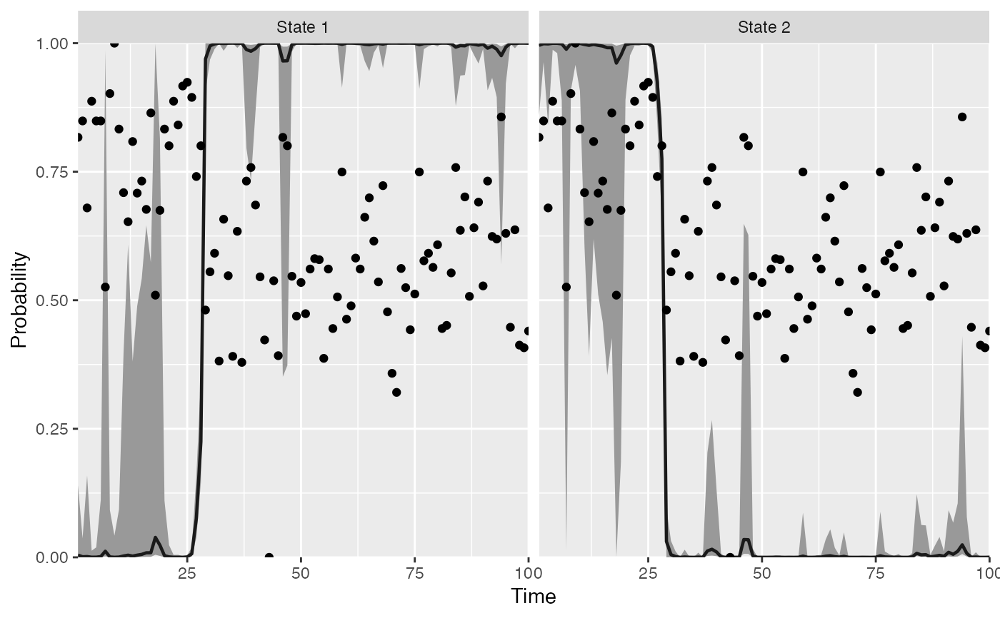

Plot the state probabilities from find_regimes()
Arguments
- model
A model returned by
find_regimes().- probs
A numeric vector of quantiles to plot the credible intervals at. Defaults to
c(0.05, 0.95).- type
Whether to plot the probabilities (default) or means.
- regime_prob_threshold
The probability density that must be above 0.5. Defaults to 0.9 before we classify a regime (only affects
"means"plot).- plot_prob_indices
Optional indices of probability plots to plot. Defaults to showing all.
- flip_regimes
Optional whether to flip regimes in plots, defaults to FALSE
Details
Note that the original timeseries data (dots) are shown scaled between 0 and 1.
Examples
# \donttest{
data(Nile)
m <- fit_regimes(log(Nile), n_regimes = 2, chains = 1, iter = 50)
#>
#> SAMPLING FOR MODEL 'hmm_gaussian' NOW (CHAIN 1).
#> Chain 1:
#> Chain 1: Gradient evaluation took 8e-05 seconds
#> Chain 1: 1000 transitions using 10 leapfrog steps per transition would take 0.8 seconds.
#> Chain 1: Adjust your expectations accordingly!
#> Chain 1:
#> Chain 1:
#> Chain 1: WARNING: There aren't enough warmup iterations to fit the
#> Chain 1: three stages of adaptation as currently configured.
#> Chain 1: Reducing each adaptation stage to 15%/75%/10% of
#> Chain 1: the given number of warmup iterations:
#> Chain 1: init_buffer = 3
#> Chain 1: adapt_window = 20
#> Chain 1: term_buffer = 2
#> Chain 1:
#> Chain 1: Iteration: 1 / 50 [ 2%] (Warmup)
#> Chain 1: Iteration: 5 / 50 [ 10%] (Warmup)
#> Chain 1: Iteration: 10 / 50 [ 20%] (Warmup)
#> Chain 1: Iteration: 15 / 50 [ 30%] (Warmup)
#> Chain 1: Iteration: 20 / 50 [ 40%] (Warmup)
#> Chain 1: Iteration: 25 / 50 [ 50%] (Warmup)
#> Chain 1: Iteration: 26 / 50 [ 52%] (Sampling)
#> Chain 1: Iteration: 30 / 50 [ 60%] (Sampling)
#> Chain 1: Iteration: 35 / 50 [ 70%] (Sampling)
#> Chain 1: Iteration: 40 / 50 [ 80%] (Sampling)
#> Chain 1: Iteration: 45 / 50 [ 90%] (Sampling)
#> Chain 1: Iteration: 50 / 50 [100%] (Sampling)
#> Chain 1:
#> Chain 1: Elapsed Time: 0.241985 seconds (Warm-up)
#> Chain 1: 0.275281 seconds (Sampling)
#> Chain 1: 0.517266 seconds (Total)
#> Chain 1:
#> Warning: The largest R-hat is NA, indicating chains have not mixed.
#> Running the chains for more iterations may help. See
#> https://mc-stan.org/misc/warnings.html#r-hat
#> Warning: Bulk Effective Samples Size (ESS) is too low, indicating posterior means and medians may be unreliable.
#> Running the chains for more iterations may help. See
#> https://mc-stan.org/misc/warnings.html#bulk-ess
#> Warning: Tail Effective Samples Size (ESS) is too low, indicating posterior variances and tail quantiles may be unreliable.
#> Running the chains for more iterations may help. See
#> https://mc-stan.org/misc/warnings.html#tail-ess
#> Warning: Some Pareto k diagnostic values are too high. See help('pareto-k-diagnostic') for details.
plot_regime_model(m)

plot_regime_model(m, plot_prob_indices = c(2))
 plot_regime_model(m, type = "means")
plot_regime_model(m, type = "means")
 # }
# }